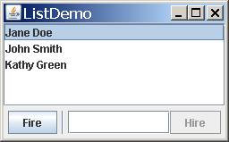

How to Use Lists
JList presents the user with a group of items,
displayed in one or more columns, to choose from.
Lists can have many items,
so they are often put in
scroll panes.
In addition to lists, the following Swing components present multiple selectable items to the user: combo boxes, menus, tables, and groups of check boxes or radio buttons. To display hierarchical data, use a tree.
The following figures shows two applications that use lists. This section uses these examples as a basis for the discussions that follow.
 |  |
|
ListDialog
(used by ListDialogRunner) | ListDemo |
Try this:
-
Click the Launch button to run ListDemo using
Java™ Web Start (download JDK 6).
Alternatively, to compile and run the example yourself,
consult the
example index.

- Click the Launch button to run ListDialogRunner.
Alternatively, to compile and run the example yourself,
consult the
example index.
- To bring up the ListDialog,
click the Pick a new name... button
in the window titled Name That Baby.
The resulting dialog is a ListDialog instance that has been customized to have the title Name Chooser. - In ListDemo, try adding (hiring) and removing (firing) a few items.
- Creating a Model
- Initializing a List
- Selecting Items in a List
- Adding Items to and Removing Items from a List
- Writing a Custom Cell Renderer
- The List API
- Examples that Use Lists
Creating a Model
There are three ways to create a list model:-
DefaultListModel — everything is pretty much taken care of for you.
The examples in this page use
DefaultListModel. -
AbstractListModel — you manage the data and invoke the "fire" methods.
For this approach, you must subclass
AbstractListModeland implement thegetSizeandgetElementAtmethods inherited from theListModelinterface. - ListModel — you manage everything.
Initializing a List
Here is the code fromListDialog.java
that creates and sets up its list:
list = new JList(data); //data has type Object[] list.setSelectionMode(ListSelectionModel.SINGLE_INTERVAL_SELECTION); list.setLayoutOrientation(JList.HORIZONTAL_WRAP); list.setVisibleRowCount(-1); ... JScrollPane listScroller = new JScrollPane(list); listScroller.setPreferredSize(new Dimension(250, 80));
Other JList constructors let you initialize
a list from a Vector or from an
object that adheres to the
ListModel interface.
If you initialize a list with an array or vector,
the constructor implicitly creates a default list model.
The default list model is immutable — you cannot add,
remove, or replace items in the list.
To create a list whose items can be changed individually,
set the list's model to an instance of a mutable list model
class, such as an instance of
DefaultListModel.
You can set a list's model when you create the list
or by calling the setModel method.
See
Adding Items to and Removing Items from a List
for an example.
The call to setSelectionMode
specifies how many items the user can select,
and whether they must be contiguous;
the next section tells you more about selection modes.
The call to
setLayoutOrientation
lets the list display its data in multiple columns.
The value JList.HORIZONTAL_WRAP
specifies that the list should display its items from left to right
before wrapping to a new row.
Another possible value is JList.VERTICAL_WRAP,
which specifies that the data be displayed from top to bottom
(as usual) before wrapping to a new column.
The following figures show these two wrapping possibilities,
together with the default, JList.VERTICAL.
 |
 |
 |
HORIZONTAL_WRAP
|
VERTICAL_WRAP
|
VERTICAL
|
In combination with the call to setLayoutOrientation,
invoking setVisibleRowCount(-1)
makes the list display the maximum number of items
possible in the available space onscreen.
Another common use of setVisibleRowCount
is to specify to the lists's scroll pane
how many rows the list prefers to display.
Selecting Items in a List
A list uses an instance of
ListSelectionModel to manage its selection.
By default, a list selection model allows any combination of items
to be selected at a time.
You can specify a different selection mode by calling the
setSelectionMode method on the list.
For example, both ListDialog and ListDemo
set the selection mode to SINGLE_SELECTION
(a constant defined by ListSelectionModel)
so that only one item in the list can be selected.
The following table describes the three list selection modes:
| Mode | Description |
|---|---|
SINGLE_SELECTION
 |
Only one item can be selected at a time. When the user selects an item, any previously selected item is deselected first. |
SINGLE_INTERVAL_SELECTION
|
Multiple, contiguous items can be selected. When the user begins a new selection range, any previously selected items are deselected first. |
MULTIPLE_INTERVAL_SELECTION
 |
The default. Any combination of items can be selected. The user must explicitly deselect items. |
No matter which selection mode your list uses,
the list fires list selection events whenever the selection changes.
You can process these events by adding a
list selection listener
to the list with the addListSelectionListener method.
A list selection listener must implement one method: valueChanged.
Here is the valueChanged method for
the listener in ListDemo:
public void valueChanged(ListSelectionEvent e) {
if (e.getValueIsAdjusting() == false) {
if (list.getSelectedIndex() == -1) {
//No selection, disable fire button.
fireButton.setEnabled(false);
} else {
//Selection, enable the fire button.
fireButton.setEnabled(true);
}
}
}
getValueIsAdjusting method returns true
if the user is still manipulating the selection.
This particular program is interested only in the final result
of the user's action,
so the valueChanged method
does something only if getValueIsAdjusting returns
false.
Because the list is in single-selection mode,
this code can use getSelectedIndex to
get the index of the just-selected item.
JList provides other methods for
setting or getting the selection
when the selection mode allows more than one item to be selected.
If you want, you can listen for events on the
list's list selection model
rather than on the list itself.
ListSelectionDemo is an example that
shows how to listen for list selection events on the list selection model
and lets you change the selection mode of a list dynamically.
Adding Items to and Removing Items from a List
The ListDemo example that we showed previously
features a list whose contents can change.
You can find the source code for ListDemo in
ListDemo.java.
Here is the ListDemo code
that creates a mutable list model object,
puts the initial items in it,
and uses the list model to create a list:
listModel = new DefaultListModel();
listModel.addElement("Jane Doe");
listModel.addElement("John Smith");
listModel.addElement("Kathy Green");
list = new JList(listModel);
DefaultListModel,
a class provided by Swing.
In spite of the class name, a list does not have a
DefaultListModel unless your
program explicitly makes it so.
If DefaultListModel does not suit your needs,
you can write a custom list model,
which must adhere to the ListModel interface.
The following code snippet
shows the actionPerformed method
for the action listener registered on
the Fire button.
The bold line of code removes the selected item in the list.
The remaining lines in the method
disable the fire button if the list is now empty,
and make another selection if it is not.
public void actionPerformed(ActionEvent e) {
int index = list.getSelectedIndex();
listModel.remove(index);
int size = listModel.getSize();
if (size == 0) { //Nobody's left, disable firing.
fireButton.setEnabled(false);
} else { //Select an index.
if (index == listModel.getSize()) {
//removed item in last position
index--;
}
list.setSelectedIndex(index);
list.ensureIndexIsVisible(index);
}
}
Here is the actionPerformed method
for the action listener shared by the Hire
button and the text field:
public void actionPerformed(ActionEvent e) {
String name = employeeName.getText();
//User did not type in a unique name...
if (name.equals("") || alreadyInList(name)) {
Toolkit.getDefaultToolkit().beep();
employeeName.requestFocusInWindow();
employeeName.selectAll();
return;
}
int index = list.getSelectedIndex(); //get selected index
if (index == -1) { //no selection, so insert at beginning
index = 0;
} else { //add after the selected item
index++;
}
listModel.insertElementAt(employeeName.getText(), index);
//Reset the text field.
employeeName.requestFocusInWindow();
employeeName.setText("");
//Select the new item and make it visible.
list.setSelectedIndex(index);
list.ensureIndexIsVisible(index);
}
insertElementAt method
to insert the new name after the current selection
or, if no selection exists, at the beginning of the list.
If you just wish to add to the end of the list,
you can use
DefaultListModel's
addElement method instead.
Whenever items are added to, removed from,
or modified in a list,
the list model fires list data events.
Refer to
How to Write a List Data Listener for information about listening for these events.
That section contains
an example that is similar to ListDemo,
but adds buttons that move items up or down in the list.
Writing a Custom Cell Renderer
A list uses an object called a cell renderer to display each of its items.
The default cell renderer knows how to display strings and icons
and it displays Objects by invoking toString.
If you want to change the way the default renderer display icons
or strings, or if you want behavior different than what is provided
by toString, you can implement a custom cell renderer.
Take these steps to provide a custom cell renderer for a list:
- Write a class that implements the
ListCellRendererinterface. - Create an instance of your class and
call the list's
setCellRendererusing the instance as an argument.
The List API
The following tables list the commonly usedJList constructors and methods.
Other methods you are most likely to invoke on
a JList object are those
such as setPreferredSize
that its superclasses provide.
See
The JComponent API
for tables of commonly used inherited methods.
Much of the operation of a list is managed by other objects.
The items in the list are managed by a list model object,
the selection is managed by a list selection model object,
and most programs put a list in a scroll pane to handle scrolling.
For the most part, you do not need to worry about the models
because JList creates them as necessary and
you interact with them implicitly with JList's convenience methods.
That said, the API for using lists falls into these categories:
| Method or Constructor | Purpose |
|---|---|
|
JList(ListModel) JList(Object[]) JList(Vector) JList() |
Create a list with the initial list items specified.
The second and third constructors implicitly
create an immutable ListModel;
you should not subsequently modify the passed-in
array or Vector.
|
|
void setModel(ListModel) ListModel getModel() |
Set or get the model that contains the contents of the list. |
|
void setListData(Object[]) void setListData(Vector) |
Set the items in the list.
These methods implicitly create an immutable ListModel.
|
| Method | Purpose |
|---|---|
|
void setVisibleRowCount(int) int getVisibleRowCount() |
Set or get the visibleRowCount property. For
a VERTICAL layout orientation, this sets or gets
the preferred number of rows to display without requiring scrolling.
For the HORIZONTAL_WRAP or VERTICAL_WRAP layout
orientations, it defines how the cells wrap. See the
setLayoutOrientation(int) for more information. The default value of this property is
VERTICAL.
|
|
void setLayoutOrientation(int) int getLayoutOrientation() |
Set or get the way list cells are laid out. The possible layout
formats are specified by the JList-defined values
VERTICAL (a single column of cells; the default),
HORIZONTAL_WRAP ("newspaper" style with the content
flowing horizontally then vertically), and VERTICAL_WRAP
("newspaper" style with the content flowing vertically then horizontally).
|
|
int getFirstVisibleIndex() int getLastVisibleIndex() |
Get the index of the first or last visible item. |
| void ensureIndexIsVisible(int) | Scroll so that the specified index is visible within the viewport that this list is in. |
| Method | Purpose |
|---|---|
| void addListSelectionListener(ListSelectionListener) | Register to receive notification of selection changes. |
|
void setSelectedIndex(int) void setSelectedIndices(int[]) void setSelectedValue(Object, boolean) void setSelectionInterval(int, int) |
Set the current selection as indicated.
Use setSelectionMode
to set what ranges of selections are acceptable.
The boolean argument
specifies whether the list
should attempt to scroll itself
so that the selected item is visible.
|
|
int getAnchorSelectionIndex() int getLeadSelectionIndex() int getSelectedIndex() int getMinSelectionIndex() int getMaxSelectionIndex() int[] getSelectedIndices() Object getSelectedValue() Object[] getSelectedValues() |
Get information about the current selection as indicated. |
|
void setSelectionMode(int) int getSelectionMode() |
Set or get the selection mode. Acceptable values are:
SINGLE_SELECTION,
SINGLE_INTERVAL_SELECTION,
or MULTIPLE_INTERVAL_SELECTION (the default),
which are defined in ListSelectionModel.
|
|
void clearSelection() boolean isSelectionEmpty() |
Set or get whether any items are selected. |
| boolean isSelectedIndex(int) | Determine whether the specified index is selected. |
| Class or Method | Purpose |
|---|---|
| int getNextMatch(String, int, javax.swing.text.Position.Bias) | Given the starting index, search through the list for an item
that starts with the specified string and return that index
(or -1 if the string is not found).
The third argument, which specifies the search direction,
can be either
Position.Bias.Forward or
Position.Bias.Backward.
For example, if you have a 6-item list,
getNextMatch("Matisse", 5, javax.swing.text.Position.Bias.Forward)
searches for the string "Matisse" in the item at index 5,
then (if necessary) at index 0, index 1, and so on.
|
|
void setDragEnabled(boolean) boolean getDragEnabled() |
Set or get the property that determines whether automatic drag handling is enabled. See Drag and Drop and Data Transfer for more details. |
Examples that Use Lists
This table shows the examples that useJList
and where those examples are described.
| Example | Where Described | Notes |
|---|---|---|
SplitPaneDemo
|
How to Use Split Panes | Contains a single-selection, immutable list. |
ListDemo
|
This section | Demonstrates how to add and remove items from a list at runtime. |
ListDialog
|
This section, How to Use BoxLayout | Implements a modal dialog with a single-selection list. |
ListDataEventDemo
|
How to Write a List Data Listener | Demonstrates listening for list data events on a list model. |
ListSelectionDemo
|
How to Write a List Selection Listener | Contains a list and a table that share the same selection model. You can dynamically choose the selection mode. |
SharedModelDemo
|
Using Models | Modifies ListSelectionDemo
so that the list and table share the same data model.
|
CustomComboBoxDemo
|
Providing a Custom Renderer | Shows how to provide a custom renderer for a combo box. Because lists and combo boxes use the same type of renderer, you can use what you learn there an apply it to lists. In fact, a list and a combo box can share a renderer. |